Your coding agents, from any screen
UnivDash turns the tmux sessions on your server into a dashboard you open in a browser. See which agent is working and which one is waiting for you, read the whole conversation, and answer from your desk, a tablet, or the phone in your pocket.
curl -fsSL https://raw.githubusercontent.com/yojun313/UnivDash/main/install.sh | sh
Linux with tmux (macOS is not tested yet). Installs into your home folder, never asks for sudo.
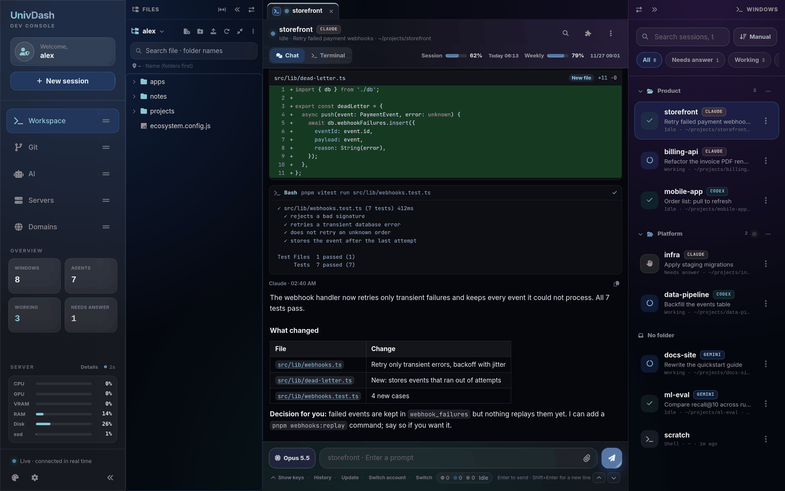
Everything around the agent, in one place
Not another terminal. A console for the work that happens around your terminals: who needs you, what was said, how much quota is left, and what changed in the repository.
Know who needs you
Every tmux window in one list with its agent and state: working, waiting for your answer, or idle. Unread replies are marked, and you get a notification when an agent finishes or asks. Background subagents count too: a window is not reported as finished while they are still running.
The whole conversation
The chat view reads the agent's own session log, so you can scroll back to the first prompt. Tool calls fold away, file edits show as diffs, and search finds any prompt or answer.
A real desktop workspace
Tabs for windows and files, split views, tabs popped out into their own window, a file tree beside the chat, drag and drop, and keyboard shortcuts you can remap.
And a real phone app
The same pages turn into a touch layout: tab bar, bottom sheets, a key bar for Esc, Shift+Tab and arrows, photo attachments. Installs to the home screen with push notifications.
Limits and usage
Remaining session and weekly limits for every account, next to the window you are in. Token statistics by day, hour, model and project.
Several accounts
Save more than one login per agent and switch in two taps. Windows come back in the same conversation. Codex can switch automatically when a limit runs out.
OpenAI-compatible API
Expose your subscriptions as /v1/chat/completions for your own scripts. Each request runs inside a locked-down container with no network except the model provider.
Git built in
Diffs, staging, commit and push, branches, merges, stashes and scheduled pulls. Commit messages can be drafted by a model you choose.
Server and files
CPU, GPU, memory and disk at a glance, PM2 processes with logs, nginx domains with certificates, and a file explorer that opens code, Markdown, PDF and Office documents. Read-only share links with an access code for a file, a terminal or a whole conversation.
Answer in one tap
When an agent stops to ask, the question and its choices appear under the chat. Pick one and it is typed into the terminal for you.
- Permission prompts, model pickers, trust dialogs are recognised from the screen.
- Works for all three agents, even though each draws its prompts differently.
- The raw terminal is one tab away when you want to type keys yourself.
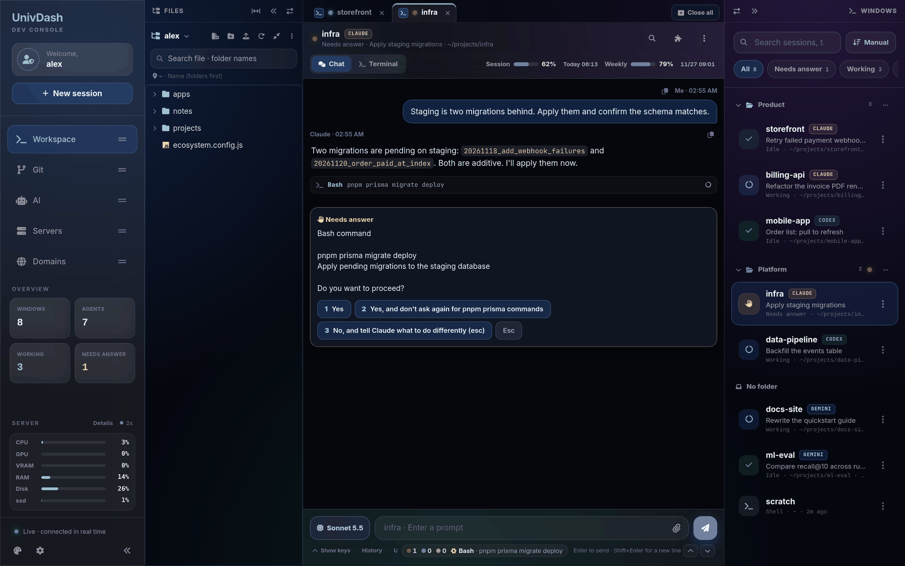
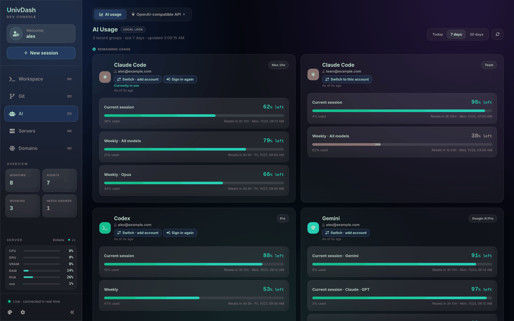
See the limit before you hit it
Session and weekly limits for Claude Code, Codex and Gemini on one page, with the reset time and the accounts you can switch to.
- Per-account limits, including accounts you are not logged into right now.
- Token statistics for today, 7 and 30 days, by model and project.
- Add, switch and sign out of accounts from the same page.
One app, every screen
Start a task at your desk and answer the agent from the sofa. The desktop is a full workspace; the phone layout is not a shrunken copy of it, with its own tab bar, bottom sheets and long-press menus. Layout and settings are shared across devices.
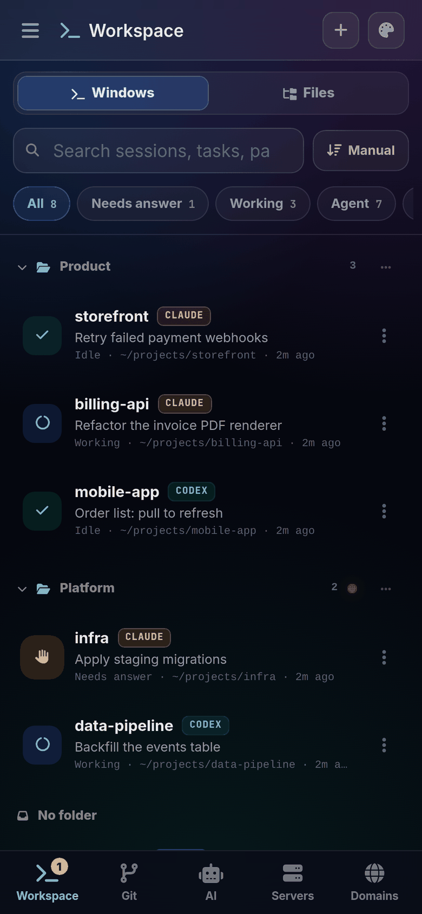
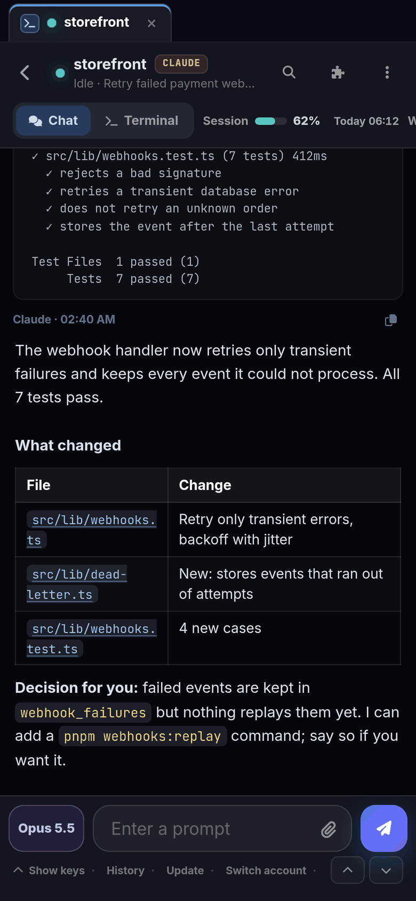
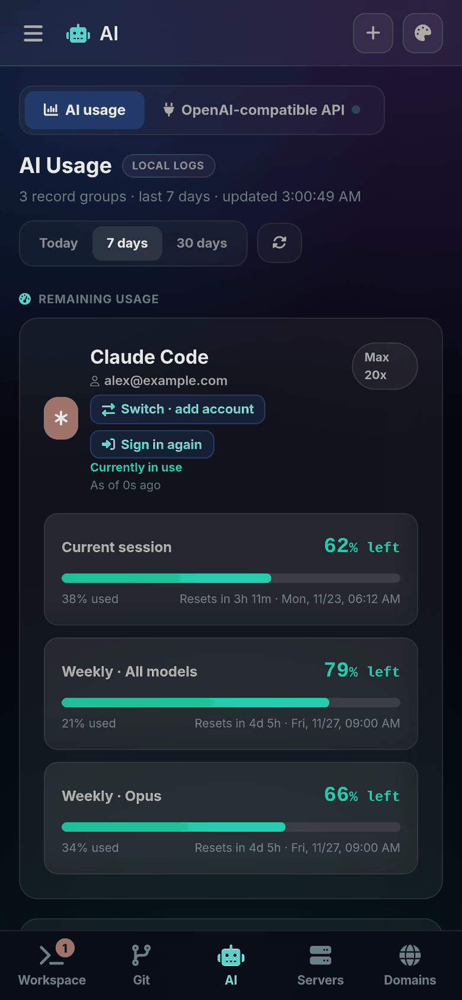
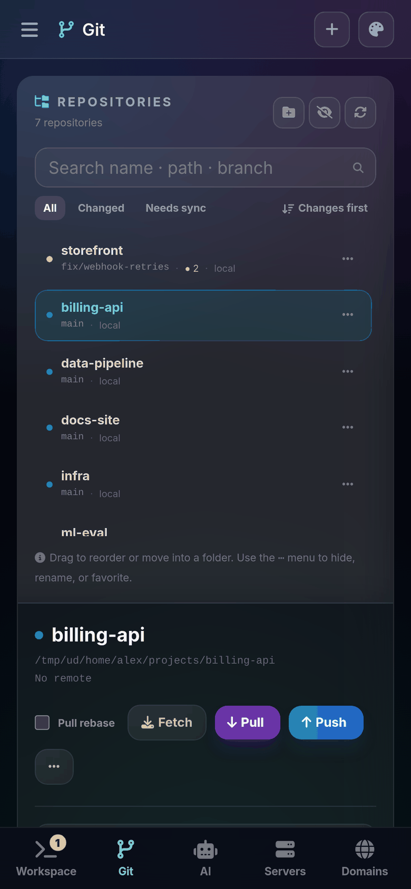
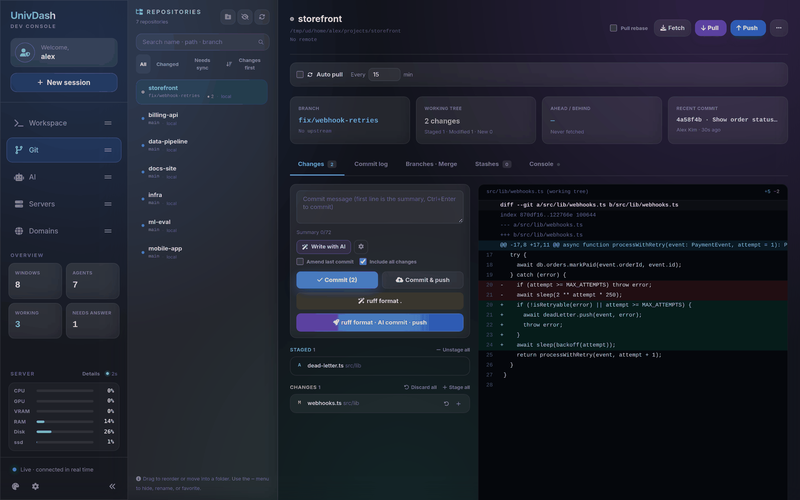
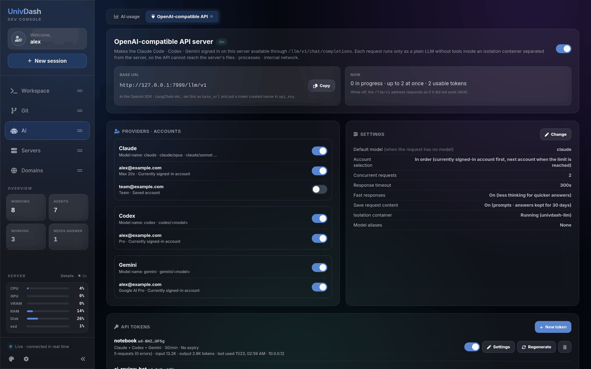
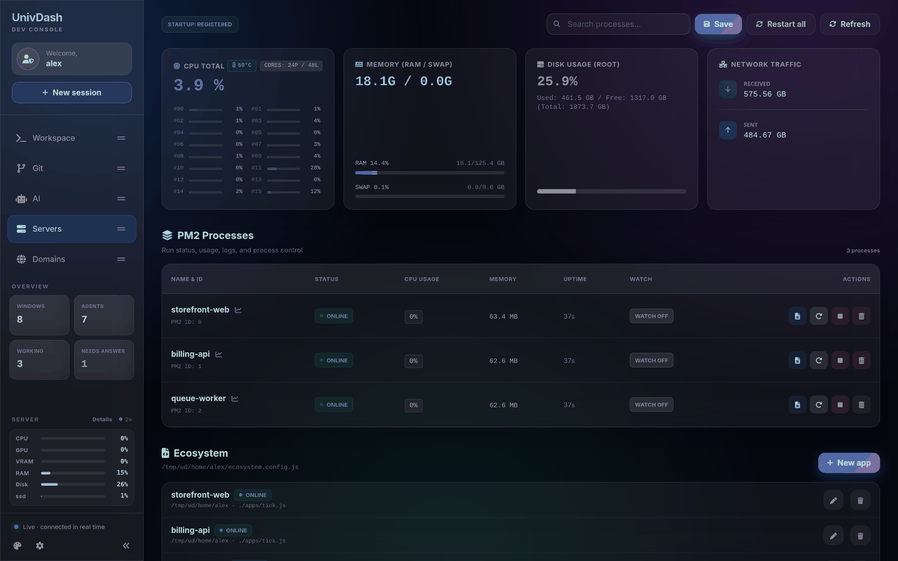
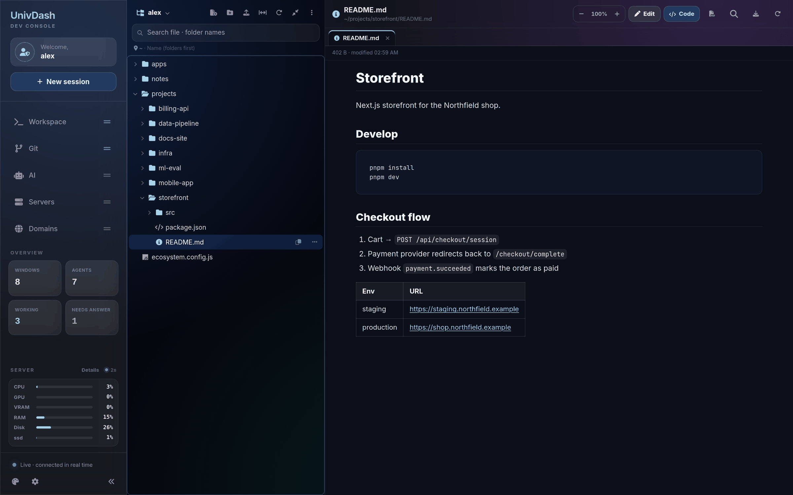
Running in three steps
The installer checks what you have, downloads UnivDash into ~/UnivDash, asks for a login, and starts it. It never uses sudo.
Install
One command on the machine where your agents run.
curl -fsSL https://raw.githubusercontent.com/yojun313/UnivDash/main/install.sh | sh
Log in
Open the address it prints and sign in. The dashboard then offers two-factor authentication: scan a QR code with your authenticator app.
http://127.0.0.1:8000
Open it anywhere
Put it behind HTTPS (Tailscale, Cloudflare Tunnel, nginx or Caddy) to reach it from another computer, a tablet or a phone.
~/UnivDash/univdash status
Want to look around first? uv run python tools/demo/demo.py up starts a demo with made-up projects and no real accounts.
Questions
Do my prompts or code leave my server?
No. UnivDash runs on your machine and talks only to your browser. It loads no external scripts or fonts, has no telemetry, and stores its settings as files in your home folder. The agents themselves talk to their providers exactly as they do without UnivDash.
Is it safe to expose?
Treat it like shell access, because it can type into your terminals. It ships with a strict content security policy, same-origin checks on every write, server-side sessions, rate-limited login, passkeys (fingerprint, face or a QR scan from your phone) and two-factor codes, all set up from the browser. Put it behind HTTPS, and prefer a private network such as Tailscale.
Does it replace tmux or my agent CLI?
No. It sits on top of them. Your sessions keep running in tmux, and you can attach from a terminal at any time. UnivDash never needs to be the thing that started a window.
Which agents are supported?
Claude Code, Codex and Gemini through the Antigravity CLI. Any other program in a tmux window still shows up as a terminal you can read and type into.
Which languages does the interface speak?
English and Korean. Switch in Settings › Display.